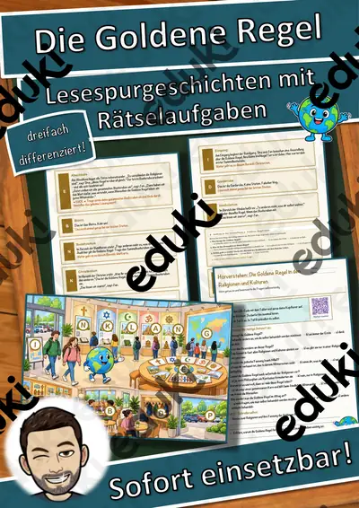
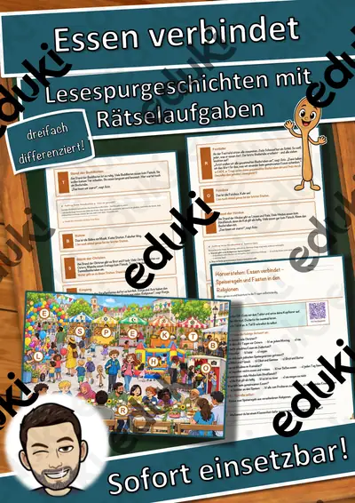

Lesespur: Fernöstliche Religionen – Lesespurgeschichte mit Rätseln (Klasse 9)
Fernöstliche Religionen – Lesespurgeschichte Ethik (Klasse 9)Begib dich mit deiner Klasse auf eine spannende Lesespur durch die Ausstellung „Wege aus dem Osten"! Emre und Sophie gehen vom Eingang über die Bereiche Hinduismus, Buddhismus, Daoismus und Konfuzianismus, die Symbolwand und die Station Meditation bis zum Abschluss. Sachlich und respektvoll lernen sie die wichtigsten Vorstellungen, Schriften und Zeichen der großen fernöstlichen Religionen und Lehren kennen – und entdecken, dass viele dieser Wege ein inneres Gleichgewicht anstreben. Ihr kleiner Kompass Kompi begleitet sie. Am Ende jedes Abschnitts verrät ein Hinweis den nächsten Ort auf dem Ausstellungs-Plan – nur wer richtig liest und mitdenkt, findet den Weg und sammelt alle geheimen Buchstaben zum Lösungswort.
Die perfekte Lesespur für den ETHIKUNTERRICHT der Sekundarstufe I: Sie verbindet motivierendes, sinnentnehmendes Lesen mit sachlichem Wissen über Hinduismus, Buddhismus, Daoismus und Konfuzianismus – streng neutral, respektvoll und ohne Bevorzugung einer Religion – und schult zugleich das genaue Arbeiten. Das Material ist SOFORT EINSETZBAR und in DREI DIFFERENZIERUNGSSTUFEN (leicht ★ / mittel ★★ / schwer ★★★) angelegt, sodass alle Jugendlichen einer Klasse am selben Thema arbeiten können.WICHTIG: Das komplette Material ist sowohl in FARBE als auch in SCHWARZ-WEISS enthalten – ideal zum Sparen von Druckkosten.DAS IST ENTHALTEN
- Lesespurgeschichte in 3 Niveaus (leicht, mittel, schwer)
- farbiger Ausstellungs-Plan als Suchkarte
- Hörverstehen mit QR-Code zur MP3 (selbstständiges Hören mit Kopfhörern)
- vier Aufträge auf dem Weg: ein Verbinde-Rätsel, ein Quiz, eine Rechenaufgabe und ein Steckbrief
- Rätselseite (Wörter-Suchsel + Wissensfragen)
- Ausmalbild zum Thema
- ausführliches Lösungsblatt für die Lehrkraft
- alles zusätzlich als komplette Schwarz-Weiß-VarianteSO FUNKTIONIERT DIE LESESPURDie Jugendlichen lesen ab START, entnehmen dem Text einen Hinweis auf einen Ort in der Ausstellung, suchen ihn auf dem Plan und lesen bei dieser Station weiter. An jeder richtigen Station gibt es einen Sammelbuchstaben. Eingebaute Sackgassen (Kasse, Garderobe, Trinkbrunnen, Buchladen) gehören zwar zur Ausstellung, sind aber keine Stationen der Spur und dienen der Selbstkontrolle. Am Ende werden die gesammelten Buchstaben umgestellt und ergeben ein geheimes Lösungswort. (Die Lösungen sind selbstverständlich nur im Lösungsblatt für die Lehrkraft enthalten.)INHALTLICHER SCHWERPUNKTVier große Wege aus dem Osten im Überblick: Der Hinduismus entstand vor sehr langer Zeit in Indien; er kennt viele Göttergestalten, die oft als Erscheinungsformen einer einzigen göttlichen Wirklichkeit verstanden werden, seinen heiligen Laut Om und die Schriften der Veden. Der Buddhismus geht auf Siddhartha Gautama, den Buddha, zurück; er zeigt einen Weg, das Leiden zu überwinden, kennt das Rad der Lehre als Zeichen und misst der Meditation große Bedeutung bei. Der Daoismus aus China stellt das Dao, „den Weg", in den Mittelpunkt und rät, im Einklang mit der Natur zu leben; sein Zeichen von Yin und Yang steht für zwei Kräfte, die sich ergänzen. Der Konfuzianismus geht auf den Gelehrten Konfuzius zurück und ist vor allem eine Lehre für ein gutes Zusammenleben, in der Respekt, Bildung und Verantwortung zählen. So verschieden diese Wege sind: Vielen geht es im Kern um dasselbe – um ein inneres Gleichgewicht und ein Leben im Einklang mit sich selbst und der Welt. Das Material stellt diese Zusammenhänge sachlich, neutral und respektvoll dar.ABGEDECKTER LEHRPLAN (Klasse 9, Ethik)
- Ethik (LehrplanPLUS Bayern) – „Fernöstliche Religionen" (Gymnasium Klasse 9): die großen fernöstlichen Religionen und Lehren in ihren Grundzügen sachlich kennenlernen, Zeichen und zentrale Vorstellungen einordnen, Gemeinsamkeiten und Unterschiede erkennen und anderen Weltanschauungen mit Respekt begegnen.
- Deutsch – Lesen mit Texten und Medien umgehen: Lesestrategien anwenden, Texten gezielt Informationen entnehmen, sinnentnehmend und selektiv lesen; Zuhören: einem Sachhörtext konzentriert folgen (Hörverstehen mit MP3).
- Mathematik – Rechnen im Sachzusammenhang.
- Fächerübergreifend / Kompetenzen: interkulturelles Lernen, genaues Lesen und Prüfen, Perspektivübernahme, Konzentration und Ausdauer, kreatives Gestalten (Ausmalbild).
Geeignet für Freiarbeit, Stationenlernen, Vertretungsstunden, Wochenplan und Homeschooling. Klassenstufe 9 (differenziert einsetzbar auch in angrenzenden Jahrgangsstufen).
Ähnliche Materialien

Lesespur: Mensch und Natur in den Religionen – Lesespurgeschichte mit Rätseln (Klasse 7)

Lesespur: Die Goldene Regel in den Religionen und Kulturen – Lesespurgeschichte mit Rätseln (Klasse 10)

Lesespur: Heilige Schriften der Weltreligionen – Lesespurgeschichte mit Rätseln (Klasse 7)

Lesespur: Essen verbindet: Speiseregeln und Fasten in den Religionen – Lesespurgeschichte mit Rätseln (Klasse 5)

Sprechstunde - Buddhismus - Lass uns reden

Lesespur: Lichterfeste in den Religionen: Diwali, Chanukka, Martinstag, Advent – Lesespurgeschichte mit Rätseln (Klasse 6)

Lesespur: Erwachsen werden: Übergangsrituale in den Religionen – Lesespurgeschichte mit Rätseln (Klasse 7)